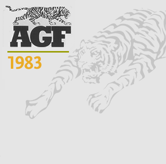
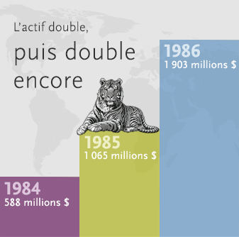
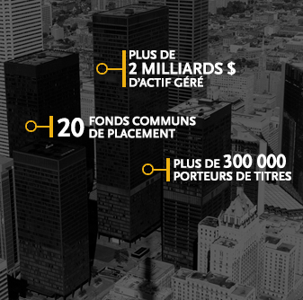

1980
Après la stagflation, l’essor
-
Dans les années 1980, après avoir fait preuve de ténacité, AGF se transforme pour afficher des résultats remarquables, mais aussi pour relever de nouveaux défis d’envergure.
-
1983 AGF adopte le symbole du tigre
 Chasseur réputé agressif, mais patient et stratégique, le tigre incarne les qualités que la société estime détenir.
Chasseur réputé agressif, mais patient et stratégique, le tigre incarne les qualités que la société estime détenir. -

-
1986 Évolution du contexte
À la fin de l’année 1986, les banques, les compagnies d’assurance et d’autres institutions financières sont autorisées à offrir des fonds communs de placement.
Pour AGF, cette décision oblige à poursuivre une stratégie de marketing de masse, un effort qui se poursuit aujourd’hui encore.
-
1987 Blake Goldring se joint à la société
Aujourd’hui président du conseil et chef de la direction de La Société de Gestion AGF Limitée, Blake Goldring a d’abord géré les portefeuilles japonais et asiatiques d'AGF et a aidé à la création d’AGF International Advisors Co. Ltd. (AGFIA) à Dublin.
-
1987 30 années d’existence fortes
- • Les ventes de l’année franchissent un nouveau sommet.
- • L’actif géré dépasse 2 milliards $.
- • La société offre 20 fonds de placement.
- • Elle compte plus de 300 000 porteurs de titres.
- • Elle occupe trois étages dans l’emblématique Tour TD.
Source : Rapport annuel AGF de 1987
-
L’ajout de la Compagnie de Fiducie AGF, par l’intermédiaire de l’acquisition de la Compagnie de fiducie Chancellor, aide la société à rivaliser avec ses nouveaux concurrents en offrant un vaste éventail de produits de premier ordre.